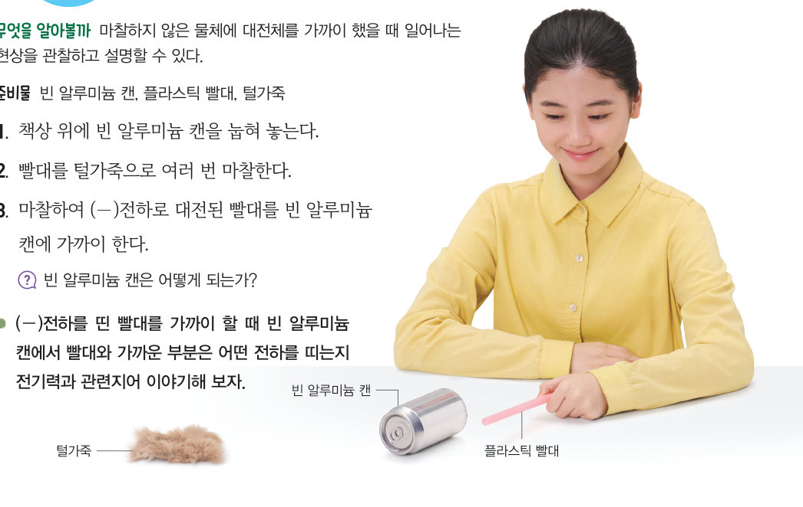
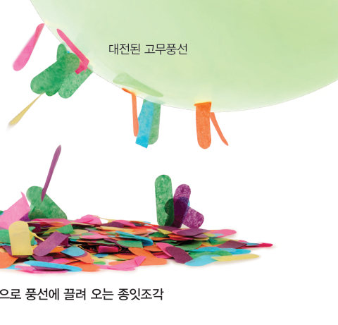

마찰하지 않은 금속 공이 끌려가는 까닭은 무엇일까? 대전된 빨대를 가상 알루미늄 캔에 가까이 하여 캔이 굴러오는 모습과 캔 속 전자의 이동을 관찰하고, 정전기 유도를 설명해 보자.
🎯 이 단원을 배우면 — 정전기 유도 현상을 관찰하고, 이를 전기력과 원자 모형을 이용하여 설명할 수 있다.
해 보기 · 과학적 증거에 기반하여 주장하기대전체를 가까이 한 알루미늄 캔 관찰하기 232쪽
마찰하여 전기를 띠는 두 물체 사이에는 전기력이 작용한다. 그런데 전기를 띠지 않은 물체에 대전체를 가까이 했을 때에도 전기력이 작용한다. 전기를 띠지 않은 알루미늄 캔에 대전체를 가까이 할 때 일어나는 현상을 관찰하고, 이를 전기력과 관련지어 생각해 보자.

232쪽① 책상 위에 빈 알루미늄 캔을 눕혀 놓는다. ② 빨대를 털가죽으로 여러 번 마찰한다. ③ (-)전하로 대전된 빨대를 빈 알루미늄 캔에 가까이 한다.
빨대와 알루미늄 캔을 나란히 한 상태에서 빨대를 가까이 한다. 이때 빨대가 알루미늄 캔에 닿지 않도록 한다.
가상 실험굴러오는 알루미늄 캔
가까이 할 물체를 고르고 슬라이더로 캔에 다가가 보자. 캔 속 전자(파란 −)가 어떻게 움직이는지 살펴보세요.
대전체 위치멀리
빨대를 캔 쪽으로 천천히 가까이 해 보세요.
1(-)전하로 대전된 빨대를 가까이 하면 빈 알루미늄 캔은 . 이때 캔 속 전자는 빨대에서 으로 이동하여, 빨대와 가까운 부분은 전하를 띤다.
💬(-)전하를 띤 빨대를 가까이 할 때 빈 알루미늄 캔에서 빨대와 가까운 부분은 어떤 전하를 띠는지 전기력과 관련지어 이야기해 보자.
교과서마찰하지 않은 물체에 전기력이 작용하는 까닭 233쪽
알루미늄과 같은 금속에는 비교적 자유롭게 움직일 수 있는 전자가 많다. (-)전하로 대전된 빨대를 알루미늄 캔에 가까이 하면 알루미늄 캔의 전자가 전기력을 받아 빨대에서 먼 쪽으로 이동한다. 그 결과 알루미늄 캔에서 빨대와 가까운 부분은 (+)전하를 띠게 되어 알루미늄 캔이 빨대 쪽으로 끌려 온다.
그림 7-3정전기 유도 — 대전체를 가까이 하기 전과 가까이 할 때
전기를 띠지 않은 물체에 대전체를 가까이 할 때 대전체와 가까운 쪽은 대전체와 다른 종류의 전하를 띠고, 대전체와 먼 쪽은 대전체와 같은 종류의 전하를 띤다. 이러한 현상을 정전기 유도라고 한다. 대전된 고무풍선을 종잇조각에 가까이 할 때 종잇조각들이 풍선에 달라붙는 것처럼 정전기 유도 현상은 고무나 종이 등 금속이 아닌 물체에서도 관찰할 수 있다.

그림 7-4정전기 유도 현상으로 풍선에 끌려 오는 종잇조각
🧩 첫 번째 블록 조각
미세 먼지는 현상으로 대전된 공기 청정기의 필터에 끌려 온다.
정전기 유도 돋보기금속 막대 A–B의 전하 분포
대전체의 전하 종류를 고르고 금속 막대에 가까이 해 보자. A는 대전체와 가까운 끝, B는 먼 끝이에요.
1(-) 대전체를 대전되지 않은 금속 막대의 A 쪽에 가까이 하면 전자는 방향으로 이동한다. 그 결과 A 부분은 전하, B 부분은 전하를 띠고, A 부분과 (-) 대전체 사이에는 서로 전기력이 작용한다.
2(+) 대전체를 가까이 하면 금속 막대의 전자는 대전체 A는 전하를 띤다. 이때 금속 막대 속에서 움직이는 것은 이다.
스스로 확인하기232쪽 학습 목표를 달성했는지 확인해 보자 233쪽
1개념 확인 대전되지 않은 물체에 대전체를 가까이 할 때 대전체와 가까운 쪽은 종류의 전하를 띠고 대전체와 먼 쪽은 종류의 전하를 띠는 현상을 (이)라고 한다.
2사고력 플라스틱 빨대를 털가죽으로 여러 번 마찰한 후 털가죽을 빈 알루미늄 캔에 가까이 하면 어떻게 될지 설명해 보자.
5분 테스트가까이 하면 생기는 전기
1알루미늄과 같은 금속에는 비교적 자유롭게 움직일 수 있는 가 많다.
2전기를 띠지 않은 물체에 대전체를 가까이 할 때 대전체와 가까운 쪽은 대전체와 , 먼 쪽은 종류의 전하를 띠는 현상을 라고 한다.
3(-) 대전체를 알루미늄 캔에 가까이 하면 캔에서 대전체와 먼 부분은 전하, 가까운 부분은 전하를 띤다.
✔옳으면 O, 옳지 않으면 X
④ 정전기 유도는 금속 내부에서 전자가 이동하여 나타나는 현상이다.
⑤ 금속에 (+) 대전체를 가까이 하면 금속 내부의 전자들이 대전체 쪽으로 끌려 온다.
⑥ 금속에 (-) 대전체를 가까이 하면 금속 내부의 (+)전하들이 대전체 쪽으로 끌려 온다.
스스로 정리하기정전기 유도 · 첫 번째 블록 찾기 234쪽
3정전기 유도
⑴ 정전기 유도: 전기를 띠지 않은 물체에 대전체를 가까이 할 때 대전체와 가까운 쪽은 대전체와 종류의 전하를, 먼 쪽은 종류의 전하를 띠는 현상 ⑵ 전기를 띠지 않은 금속에 대전체를 가까이 하면 금속과 대전체 사이에는 서로 방향으로 힘이 작용한다.
🧩 첫 번째 블록 찾기 — 공기 청정기의 필터에 미세 먼지가 달라붙는 까닭은 무엇일까?
231쪽 조각: 대전된 공기 청정기 필터와 미세 먼지 사이에 작용하는 힘은 전기력이다. · 233쪽 조각: 미세 먼지는 정전기 유도 현상으로 대전된 공기 청정기의 필터에 끌려 온다.
🧩두 블록 조각을 이어서 첫 번째 블록 질문에 답해 보자.
평가 기준
스스로 평가
지식·이해 정전기 유도 현상을 전기력과 원자 모형을 이용하여 설명할 수 있는가?
과정·기능 대전체를 가까이 한 알루미늄 캔을 관찰하고 결과를 해석할 수 있는가?
가치·태도 일상생활의 전기 현상을 과학적으로 설명하며 흥미를 느꼈는가?
제출학생 정보 · 제출하기
모든 활동을 마친 뒤 제출하면 전체가 한 번에 채점되고 피드백이 나타나요. 답안은 선생님 스프레드시트(중2 탭)에 기록돼요.